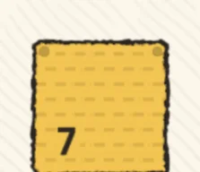
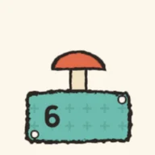
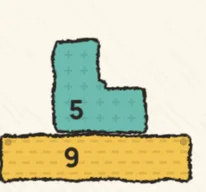
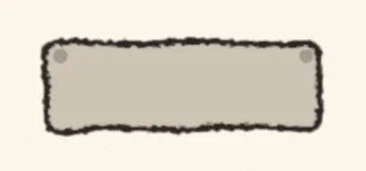
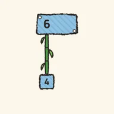
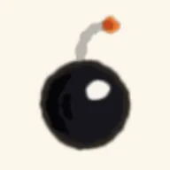

How to play
Shoot balls at the blocks. Every hit takes 1 off a block's number, and at 0 it pops. Pop them all and you dig down to the next zone. Shots run out, though, so make them count.
Taking a shot
- Move the launcher Want a better angle? Tap it and drag it along the top.
- Aim Touch where you want to shoot and slide your finger to fine-tune. Using a mouse? Just point.
- Check the dotted line That's where your ball will go. Each orange dot is a hit.
- Shoot Let go (or click). Changed your mind? Slide off the board first.
- Speed it up Ball taking forever? Press and hold anywhere while it bounces.

Sound starts off. Flip it on in Settings.
Playing with a kid? Try Relaxed mode in Settings. The zones are easier, and the shots never run out. It keeps its own game, so yours stays right where you left it.
Using a keyboard? Aim with ← and → (hold Shift to go slow) and press Space to shoot. Hold Space to speed things up. Alt (Option) with ← or → moves the launcher, Esc cancels or pauses, and M turns sound on or off.
Reading the top
- Depth
- How deep you've dug. There's no bottom. I checked.
- Shots left
- Each shot uses one. When they're gone, the game's over.
- Par
- Shots you've used in this zone, and how many it should take.
- The bar
- How much of the zone you've cleared so far.
Hit harder
Earn more shots
Things you'll meet

BlocksMost are nailed in place. Hit near a nail to knock it out. One nail left and the block swings. None left and it falls. Grey nails never come out. WindmillsHit one and it spins, then swats the next ball that comes by.
WindmillsHit one and it spins, then swats the next ball that comes by.
MushroomsThey grow on walls and blocks. Their caps bounce balls back extra hard. +1 ringsFly a ball through one and you get an extra shot.
+1 ringsFly a ball through one and you get an extra shot.
Resting blocksNo nails at all. Knock out what's holding them up and down they go. Jelly blocksBalls go right through, just slower. Each pass takes 1 off.
Jelly blocksBalls go right through, just slower. Each pass takes 1 off. CupsDrop a ball in for a +1. It'll rattle around in there for a bit.
CupsDrop a ball in for a +1. It'll rattle around in there for a bit.
Grey blocksYou can't break these, but you can bounce shots off them. Knock their nails out and they crumble.
VinesA few hits and they snap. Whatever they're holding comes down too.
BombsHit one twice to light it, and it knocks a chunk off everything nearby. Trust me on this one.
Boop! is made by Erik Sagen.
Boop, the little blue block, explains the rest as you play. Done.